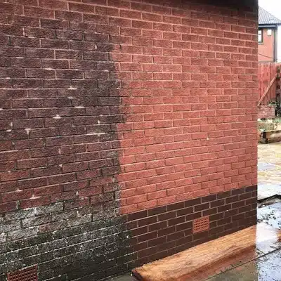

FACADERENS
FACADERENS - VÆK MED ALGER, SKIDT OG SNAVS
Alger, skidt og snavs sætter hurtigt sit præg på dine facader, og du er ikke den eneste. Facader er oftes udsat for skidt og snavs, og alger og mos har gode betingelser for at gro her i Danmark. Derfor er en effektiv facaderens ofte vejen frem. Alger og mos giver et træls udseende på huset. Det også have meget alvorlige konsekvenser ikke at vedligeholde sine facader. Dit hus skal vedligeholdes ligesom alt andet. Det er bedre at forebygge inden det er gået galt! Med vores facaderens og algebehandling, sørger vi for, at dine facader igen er rene. Samtidig forbygger vi med vores imprægnering mod fugt og svamp og forlænger derved facadens levetid. Vores algefjerner er miljøgodkendt, og sikrer dig en algebehandling med et professionelt og fantastisk resultat.
SÅDAN GØR VI!
1
Vi fjerner pest, mos, skidt og snavs fra muren, med en maskine som skåner facaden..
2
efterbehandler med algebehandling, som dræber de sidste rester af algespore..
3
og pålægger ny imprægnering som beskytter facaden og giver den længere levetid.
HVORFOR? DERFOR!
Du skal passe på dine facader, da alger og nogle former for mos kan skade din facade. Hvis ikke du vælger en facaderens eller yder generel vedligeholdelse, skaber det små revner og sprækker i facaden når de sætte rødder. Derigennem kommer fugt og dannelse af svamp som siver ind i jeres hulmur! Dette kan videre give skader ind i huset såsom vægge, gulve mv.
Undgå Frostspringninger
Ligesom i taget, så udvides disse spækker når det bliver vinter, da det kan frostspringe ved fugerne og i stenene på facaden. Dette kan ikke ses i starten men vær over det inden skaden er sket, for så bliver det næsten uoverskueligt!
Derudover er en ren facade bare meget mere tilfredsstillende for sjælen og hvis du er ansvarlig for en virksomhed. Det giver et fantastisk udtryk af virksomheden, at have en ren og vedligeholdt facade – det er det første som kunden møder på vej ind.